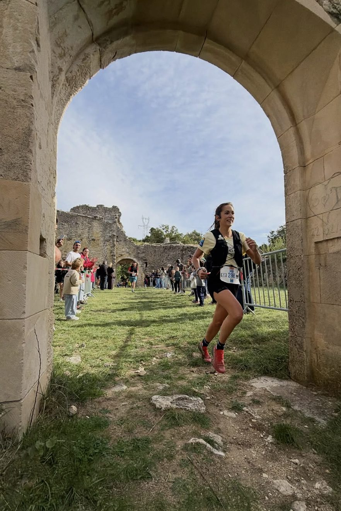
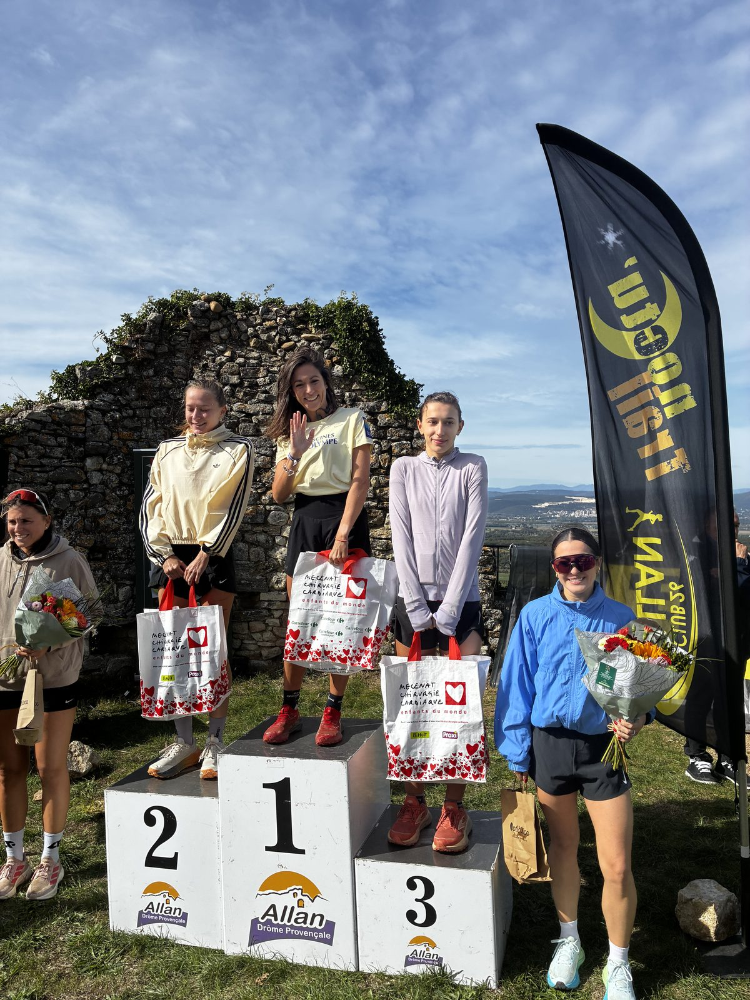

Allan, dimanche 11 octobre. Pas de grand rendez-vous national ou international cette fois : un village, ses sentiers, et la course voisine. Mais ces sentiers-là, les athlètes de Mrun les connaissent par cœur — c'est leur terrain d'entraînement. Ce dimanche matin, l'association était sur l'All'enTrail de deux façons : avec un dossard, pour Mathilde BAUDELOCQ sur le 12K et Sophie ORTIZ sur le 23K ; et derrière la caméra, drone en l'air, pour le reportage vidéo de la course et de ses organisateurs. Au bout : une 1ʳᵉ place féminine pour Mathilde, et un 23K bouclé en 2 h 40, à la force du mental, pour Sophie.
- Lieu
- AllanÀ la maison
- Formats
- 12K & 23K500 et 800 m D+
- Date
- 11 octobreDimanche
- Mrun
- 2 athlètes+ reportage drone
🏡 Courir à la maison
L'All'enTrail, c'est la course d'à côté. Plus petite que celles que les athlètes Mrun enchaînent en cœur de saison — des épreuves nationales et internationales, du Ventoux au Mont-Blanc en passant par le Vercors. Une course sympa, à l'ambiance familiale, amicale et décontractée, et toujours bien organisée. Un bon moment, tout simplement.
Mais qu'on ne s'y trompe pas : petite course ne veut pas dire course sans pression. Courir à la maison, c'est courir devant ses amis et sa famille. C'est être vu, attendu, encouragé par ceux qui comptent — et avoir furieusement envie de bien faire. Les enjeux sont là, différents mais bien réels. C'est ce qui fait de ce dimanche une étape à part entière : un jalon dans un processus, qui servira pour la suite.
🔥 Sophie ORTIZ — 23K, la tête plus forte que les genoux
23 km / 800 m D+ — Dimanche 11 octobre 2026, Allan
Venue pour se tester
Sophie est une sportive de la région, une amatrice qui court quelques courses locales — et une compétitrice dans l'âme. Son terrain de jeu habituel, c'est le 10K. Alors s'aligner sur 23 kilomètres et 800 mètres de dénivelé, c'est sortir de sa zone de confort en connaissance de cause. Elle est venue pour se tester, pour se challenger. Elle a trouvé ce qu'elle était venue chercher.
Les ailes du début
Les premiers kilomètres sont un régal : super forme, les jambes répondent. Au 4ᵉ kilomètre, elle apprend qu'elle est 11ᵉ — « ça booste ! ». Aux 6ᵉ et 7ᵉ kilomètres arrivent les premières vraies difficultés : près de deux kilomètres de montées et de descentes très raides, en lacets. Sophie avance, et passe 8ᵉ. « Trop fière ! » Elle avance, elle avance.
Le genou se réveille
Aux 8ᵉ et 9ᵉ kilomètres, la douleur au genou refait surface. Supportable, mais elle est là, surtout dans les descentes. Au premier ravitaillement, Sophie ne s'arrête pas — pas question de casser le rythme. Le terrain, plutôt plat, l'aide à tenir.
Au 15ᵉ kilomètre, après deux kilomètres de montée et quelques mètres de descente, la souffrance s'installe. La douleur s'intensifie. Elle a perdu deux places, mais elle reste dans leurs pas. Elle les tient.
Quand la tête prend le relais
Puis une petite côte. Elle marche. Et là, repartir devient presque impossible. Elle boite. Elle repasse 11ᵉ, et elle sait qu'elle ne pourra plus remonter.
C'est le moment où une course bascule — ou pas. Sophie refuse de lâcher. Elle court. Doucement, mais elle court, avec une seule certitude : si elle s'arrête, elle ne redémarrera pas.
Deux kilomètres. Puis encore deux. « OK, on y est presque. » Une petite côte, elle marche, et le redémarrage se fait encore dans la souffrance. Il faut relancer la machine. Plus que quatre kilomètres. On y va.
Les larmes au bord des yeux
Plus que deux kilomètres. Les larmes montent déjà, avec une pensée qui tourne en boucle : « J'y serai arrivée malgré tout. » Le dernier kilomètre se termine en montée. Elle marche, elle marche… puis non. Il reste 500 mètres. On serre les dents, on y va. Le micro, la ligne d'arrivée : elle y est.
Elle s'était fixé un objectif : passer sous les 3 heures. Elle franchit la ligne en 2 h 40, 11ᵉ féminine. Dans le cœur, un mélange de joie et de frustration — la joie de l'objectif atteint, la frustration de savoir que les 2 h 30 étaient à portée. C'est la marque des compétitrices : à peine la ligne franchie, on pense déjà à ce qui reste à aller chercher.
Résultats — Sophie Ortiz
- CourseAll'enTrail — 23K
- DateDimanche 11 octobre 2026
- Format23 km · 800 m D+
- Temps2 h 40
- Classement11ᵉ féminine
- ObjectifMoins de 3 h ✓
Le mot de Sophie
La tête a pris le dessus : même si mon corps voulait abandonner, ma tête ne voulait pas !
La course était folle, je n'avais jamais couru autant… mais les genoux sont morts 😂
🥇 Mathilde BAUDELOCQ — 12K, partir à fond et voir
12 km / 500 m D+ — Dimanche 11 octobre 2026, Allan
Le poids des attentes
Mathilde, les lecteurs de ces communiqués la connaissent : athlète confirmée, d'un certain niveau, habituée des grands rendez-vous. Et c'est précisément là que la pression s'invite. À Allan, on l'attend. Ceux qui l'ont poussée, ceux qui la voient déjà signer une très belle course. Elle ne veut pas les décevoir.
Sauf que Mathilde, elle, sait. Elle sait que ses sensations et sa forme ne sont pas encore totalement revenues depuis les 85 km de l'Ultra Trail du Vercors, un mois plus tôt. Le corps ne s'est pas encore remis. Le mental, en revanche, est bien là. Et cette tension d'avant-course, au lieu de l'écraser, devient un moteur — celui qui va lui permettre de se dépasser.
Partons à fond, et voyons
La stratégie est claire : partons à fond, et voyons. Départ rapide — très rapide. Mathilde cherche sa place, et la prend. Le pari est assumé : courir le plus vite possible pour marquer une distance avec ses concurrentes dès le début.
Le prix à payer arrive vite. Jusqu'au 4ᵉ kilomètre, elle est essoufflée, le rythme cardiaque très élevé. Et comme elle va très vite en descente, elle ne récupère pas.
La montée pour reprendre son souffle
Au 5ᵉ kilomètre commence la montée, jusqu'au 8ᵉ. Et c'est là que la course prend une autre dimension. Autour d'elle, beaucoup d'hommes s'essoufflent ; elle, au contraire, retrouve son souffle. Elle double, encore et encore. Elle monte en courant, sans jamais marcher. Elle prend un gel bouchée après bouchée — la fréquence cardiaque est beaucoup trop élevée pour faire autrement. Dans la descente, ils la doublent à nouveau. Peu importe : aucune femme n'est en vue.
Seule en tête
Les trois derniers kilomètres passent à 4'45" au kilomètre. Le rythme est élevé, mais elle tient. Jusqu'au bout.
Mathilde BAUDELOCQ termine 1ʳᵉ femme et 32ᵉ au scratch. À aucun moment une autre femme ne l'a approchée.


Résultats — Mathilde Baudelocq
- CourseAll'enTrail — 12K
- DateDimanche 11 octobre 2026
- Format12 km · 500 m D+
- Relevé de course12,88 km · 405 m D+
- Classement femmes1ʳᵉ 🥇
- Classement scratch32ᵉ
- Allure moyenne5'10" / km
- 3 derniers km4'45" / km
- ContexteUn mois après l'Ultra Trail du Vercors
Le mot de Mathilde
Un mois après mon ultra-trail, mon corps encore marqué et abîmé […], mon souffle qui ne revient pas… je suis très satisfaite de mon résultat !
🚁 Mrun derrière la caméra
Ce dimanche, Mrun ne portait pas que des dossards. L'association assurait aussi le reportage vidéo de l'All'enTrail, pour la course et pour ses organisateurs — notamment en images drone. C'est l'un des piliers de Mrun : la mise en lumière. Mettre en valeur les épreuves et celles et ceux qui les font vivre, avec des images à la hauteur de l'effort.
Sur une course à la maison, le symbole est fort : rendre à l'événement et à son organisation un peu de ce qu'ils offrent aux coureurs.
🏁 Du plaisir à la performance
Chez Mrun, on le répète : du coureur amateur jusqu'au performer. Ce dimanche matin à Allan, il y avait les deux — et beaucoup d'émotion entre les deux.
Retour aux communiqués